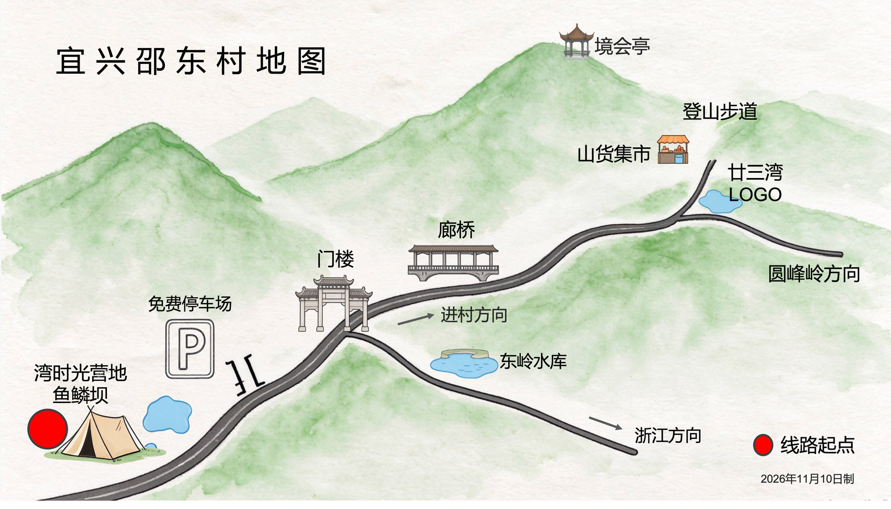
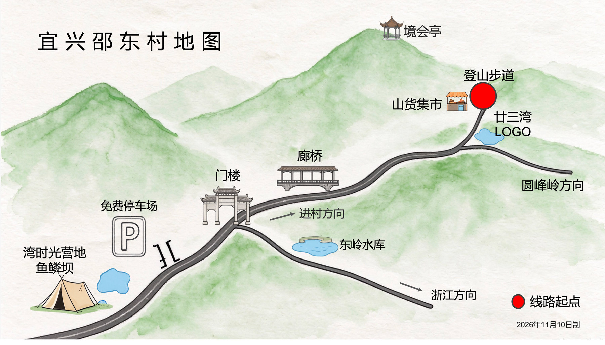
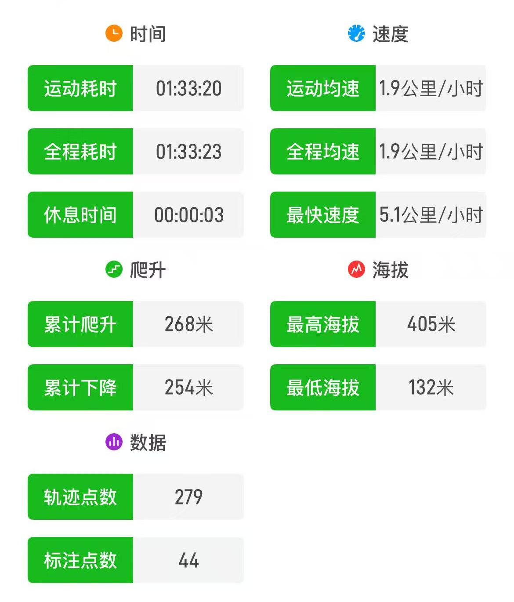
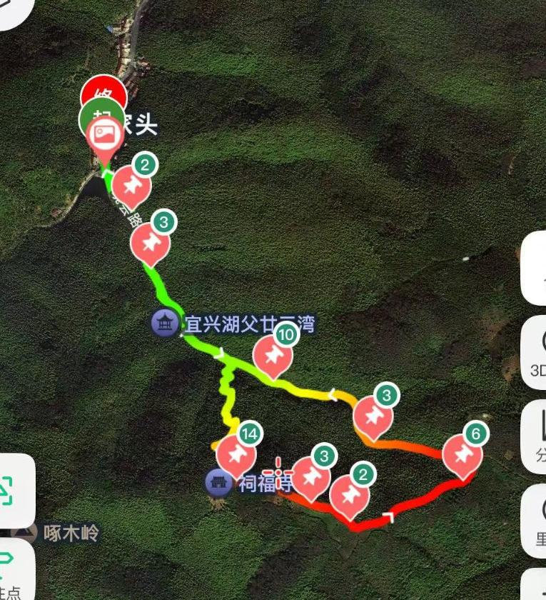
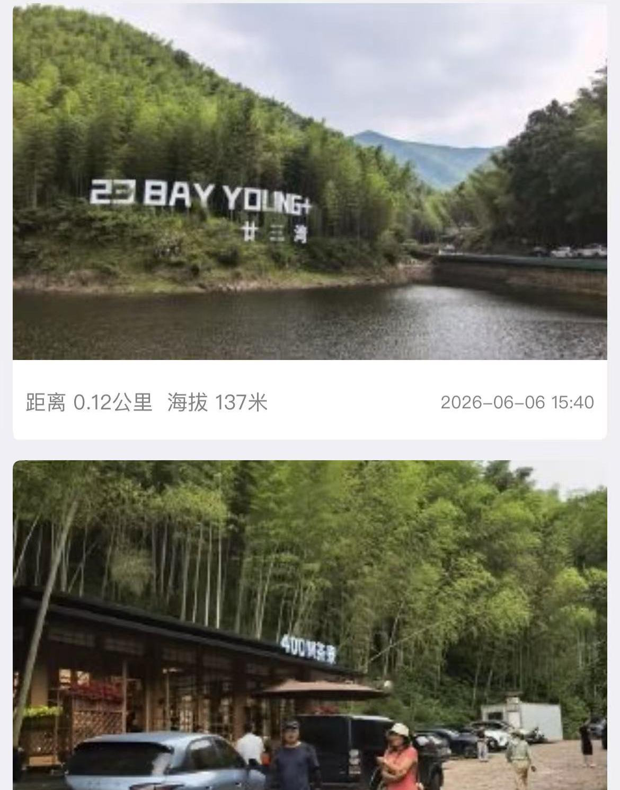

环境简介
ABOUT廿三湾，又名啄木岭，地处江苏宜兴湖㳇镇邵东村，是横亘宜兴（江苏）与长兴（浙江）之间的界山。这里竹林如海、溪泉清冽，一条之字形古道串起千年茶韵与项羽北伐的传说。无需门票，是都市人周末洗肺、亲子戏水、徒步爱好者的小众目的地。
登山线路推荐
ROUTES邵东村徒步推荐路线： 200 米亲水戏水步道， 2 公里古道登顶，7 公里田园茶山，20 公里跨省深氧大环。
LINE 1
廿三湾溯溪线
★☆☆☆
约 200 m · 平缓亲水 · 约 0.5 h
▾
里程约 200 m
爬升平缓（约 20–30 m）
时长约 0.5 小时
适合：亲子家庭、戏水爱好者、携宠
▾ 点击展开完整路线、亮点与贴士
廿三湾溯溪线 · 亲水玩水
亲水沿永红涧溪谷的亲水线路，全程约 200 米、几乎无爬升，是廿三湾最轻松的打开方式：踩水、观瀑、竹林纳凉，老少皆宜。
| 里程 | 约 200 m（沿永红涧溪谷往返） |
|---|---|
| 爬升 | 平缓（约 20–30 m，基本无爬升） |
| 时长 | 约 0.5 小时 |
| 难度 | ★☆☆☆（亲水零难度） |
| 走向 | 龙鳞坝分阶浅滩 → 溯溪戏水段 → 原路返回 |

亮点：永红涧龙鳞坝分阶浅滩可亲子踩水；溪水清澈、竹影掩映，雨季叠水成小瀑布，是夏日最清凉的玩法。
LINE 2
廿三湾休闲线
★★☆☆
约 2 km · ≈200–300 m · 约 1.5 h
▾
里程约 2 km
爬升≈ 200–300 m
时长约 1.5 小时
适合：业余爱好者、轻度挑战
▾ 点击展开完整路线、海拔与打卡点
廿三湾休闲线 · 古道登顶
首选图例红色圆点线（廿三湾休闲线，2KM）。从廿三湾登山道入口处上山，经廿三湾古道石阶登顶境会亭，俯瞰竹海茶园、一脚跨苏浙两省，再沿青芝岭下山返回，是领略风景加轻度挑战的首选走法。
| 里程 | 约 2 km（图例标 2KM） |
|---|---|
| 爬升 | ≈ 200–300 m |
| 时长 | 约 1.5 小时 |
| 难度 | ★★☆☆（偏低，石阶为主） |
| 走向 | 廿三湾登山道入口处 → 廿三湾（古道石阶 · 23 弯）→ 境会亭（山顶 · 一脚跨苏浙两省）→ 青芝岭下山 → 返回廿三湾登山道入口处 |




亮点：登顶境会亭俯瞰竹海茶园、一脚跨苏浙两省；沿古道石阶下行感受千年驿道；途中祠福寺、更衣亭可歇脚。
LINE 3
邵东绿野线
★★★☆
约 7 km · 中等 · 约 3 h
▾
里程约 7 km
爬升中等
时长约 3 小时
适合：徒步爱好者、准专业选手
▾ 点击展开完整路线、海拔与打卡点
邵东绿野线 · 田园茶山
中等图例浅黄色线（邵东绿野线，7KM）。环绕邵东村绿野田园与茶山，串联市集、歇脚亭与多处观景打卡点，在「7,20 交汇处」与深氧线相接，是深入村落肌理的走法。
| 里程 | 约 7 km（图例标 7KM） |
|---|---|
| 爬升 | 中等（沿途多起伏茶山步道） |
| 时长 | 约 3 小时 |
| 难度 | ★★★☆（中等，含连续起伏） |
| 走向 | 游客服务中心 / 邵东村村委 → 三湾市集 → 绿野田园与茶山步道 → 崖口指示牌 → 打卡点 / 休息区 → 观景亭 / 岭景茶亭 → 在「7,20 交汇处」与深氧线相接 → 返回起点 |
亮点：穿行邵东村田园与阳羡茶山，途经三湾市集、歇脚亭与多个打卡点；可在「7,20 交汇处」灵活接驳深氧线，自由组合里程。
LINE 4
廿三湾深氧线
★★★★
约 20 km · 进阶 · 约 6–7 h
▾
里程约 20 km
爬升较大
时长约 6–7 小时
适合：有经验者、越野爱好者（跨苏浙）
▾ 点击展开完整路线、海拔与打卡点
廿三湾深氧线 · 跨省大环
进阶图例橙黄色线（廿三湾深氧线，20KM）。翻越啄木岭、串起苏浙两省的深氧大环，集古道、茶园、竹林、山脊与长兴侧水库于一体，里程桩一路延伸至约 18.5 km，是江浙沪经典穿越线。
| 里程 | 约 20 km（图例标 20KM；两步路实测轨迹 12.8–13.7 km 为其中跨省段） |
|---|---|
| 爬升 | 较大（实测累计爬升 550–570 m） |
| 时长 | 约 6–7 小时（运动耗时 4h23m–4h29m） |
| 最高海拔 | 431–439 m |
| 难度 | ★★★★（进阶，含野路、部分无信号） |
| 走向 | 登山入口 / 游客服务中心 → 廿三湾 → 境会亭（山顶）→ 沿橙黄线深氧大环 → 崖口指示牌 / 最佳拍摄牌 / 山顶观景平台 →「7,20 交汇处」→ 翻越啄木岭（苏浙界山）→ 浙省长兴侧（顾渚水库、霸王潭一带）→ 返回邵东村 |
亮点：跨江苏宜兴与浙江长兴两省，深氧竹海与茶山一路相伴；途经顾渚水库（碧绿湖面出片）、霸王潭摩崖石刻（项羽沐浴传说）；长兴侧农家乐多，可作补给与下撤点。
沿途打卡点
SPOTS境会胜迹门楼
景区入口标志性建筑，"境会"源自唐代湖常二州刺史共聚品茗阳羡贡茶的历史盛事。
永红涧 · 龙鳞坝
玩水核心：分阶浅滩、溪水冰凉、树荫全覆盖；雨季叠水成小瀑布，亲子踩水、拍照绝佳。
廿三湾石阶
古道精华：23 道之字形弯道，沿路立二十四节气标识，万亩竹海遮天，石阶布满青苔、温润光滑。
祠福寺
位于第 23 湾平台，茶园环绕，徒步中途歇脚点，安静清幽（旁有休憩凉亭）。
境会亭 · 苏浙界碑
山顶复刻唐代茶宴旧址，俯瞰竹海茶园；一脚跨苏浙两省，界碑必打卡。
贡茶古道遗址
约 1000–2000 m，江苏唯一古代贡茶运输遗址，斑驳石板诉说千年过往。
乌峰岭
登顶可望江浙皖三省风光与太湖远景，瞭望亭是经典打卡点。
霸王潭
相传项羽 24 岁起兵前在此沐浴，膝印深嵌石上；溪水清澈、摩崖石刻。
顾渚水库
四面环山碧绿湖面，晴天极出片；长兴侧农家乐、商铺多，可作补给与下撤。
出行建议
INFO门票与交通
- 门票：全程免费，无景区收费。
- 自驾（首选）：导航「廿三湾 / 宜兴廿三湾停车场」，村口 / 山脚免费停车，车位充足；卫生间在停车位旁。
- 公共交通：高铁至宜兴站换乘湖㳇镇班车，步行约 10 分钟；或至长兴站转水口乡。整体不便，建议自驾 / 包车。
补给与装备
- 补给：山脚村落有农家、山泉冰镇瓜果、小摊位（打卡牌处可买水 / 烤肠 / 山货，并设卫生间）；上山约 400 m 处有咖啡馆，是上山前最后一个卫生间；山上无商店，自备饮水与零食。
- 装备：防滑运动鞋（石阶常年湿滑长青苔）；玩水带溯溪鞋＋换洗衣物；登山杖（下坡护膝）；夏季长裤＋驱蚊；雨具。
季节与拍照
- 季节：6–9 月避暑玩水；4 月春日茶山；11 月竹海秋景。
- 拍照：浅色穿搭出片；上午 11 点前林间光束（丁达尔光）最佳，弯道石阶纵深感强。
- 周边可串联油车水库（阳羡湖），组合竹海徒步＋湖边日落一日游。
注意事项
- 石阶湿滑、野路段需手脚并用，注意防滑防崴脚。
- 夏季林中蚊虫多，备驱蚊、建议长裤。
- 部分路段手机无信号，长环线请提前下载离线轨迹。
- 雷雨、地灾等极端天气不进山。
安全与无痕山林（LNT）
廿三湾是开放式山林步道，请遵循自助、互助、环保、公平的原则：
- 不建议独自走野路长环线；无信号区段提前下载离线轨迹，并告知家人去向。
- 产生的垃圾自行带走，留下的只有脚印。
- 尊重当地村落与茶农，不进入标注"承包 / 私家"的竹林。
- 量力而行，下坡护膝、野路慢行；身体不适及时下撤。